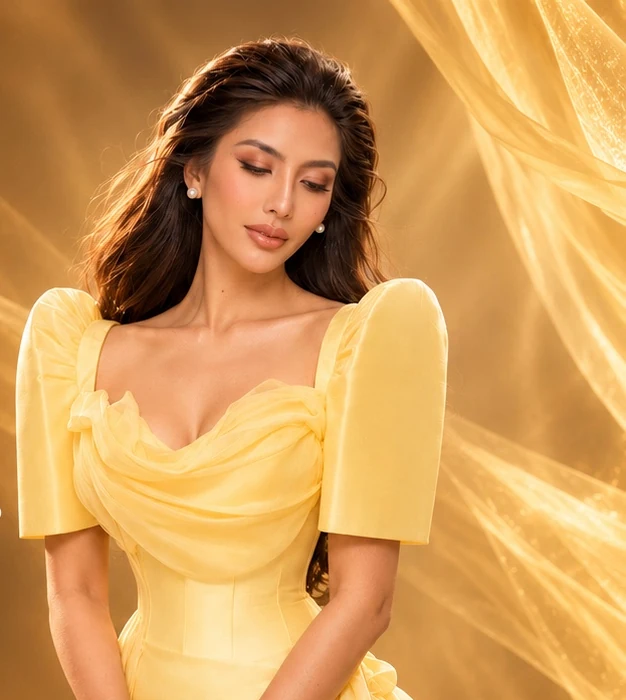
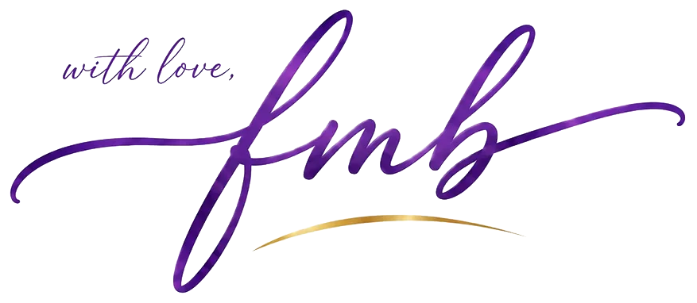
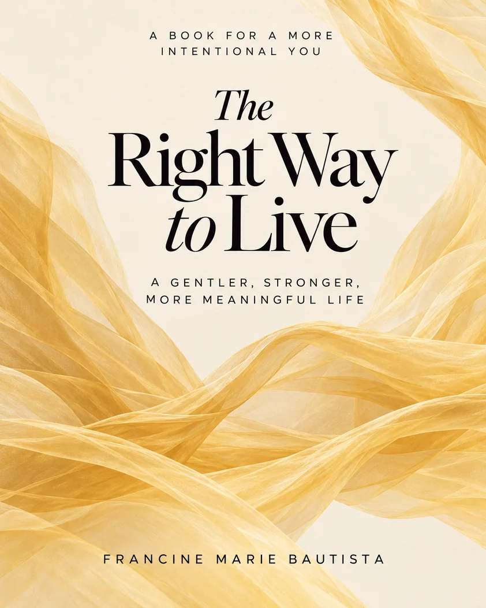
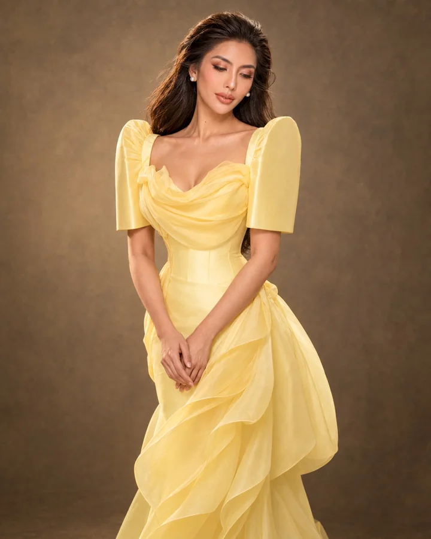
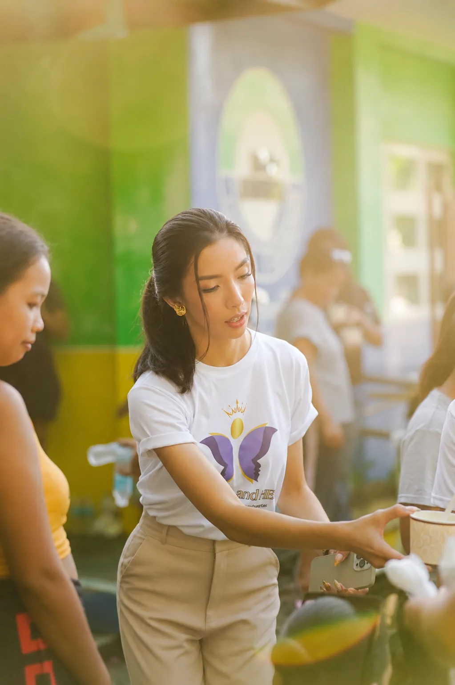
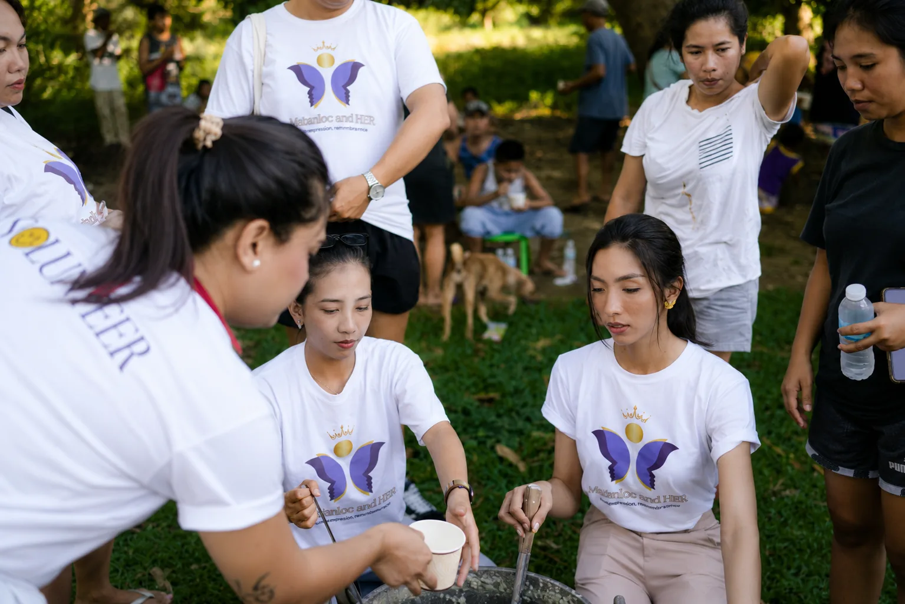
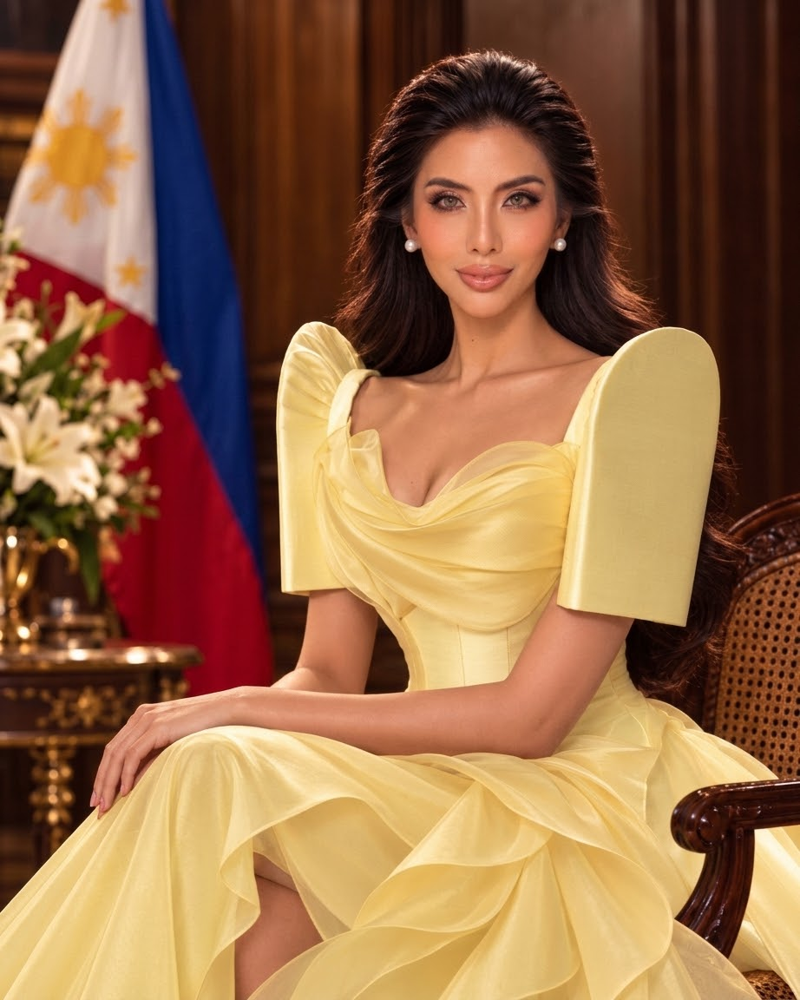

With Love, FMB.
The podcast
Conversations on life, leadership and creativity.


Francine Marie BautistaStrategy. Stories. Solutions.
Creative director, communications strategist and educator working at the intersection of people, culture and influence.
Portfolio
See my role across selected projects in communications, creative direction and community work.
View Full PortfolioHave a project in mind? Let’s talk about what you need.
Book an introductory callPersonal branding, social media strategy and public presence.
Public relations, photography, campaigns and creative direction.
Websites, digital products, automation and business solutions.
Workshops, facilitation and professional development.
Collaborations, partnerships and new opportunities.
Professional CV
The podcast
Conversations on life, leadership and creativity.

Reflections, lessons and stories from The Right Way to Live.
Across our work

The person behind the work
Teaching taught me to make an idea understandable. Communications taught me to consider how it would be received. Creative work taught me how much the details change the result.
As a Filipina creative director and strategist, I lead an independent practice across social media, communications, creative production, and practical AI. The work carries a clear point of view, from the first decision to the final detail.
Explore my backgroundCommunity & service
Service begins with showing up.
Alongside our work in communications, education, and digital platforms, there is the work we do face to face: sharing a meal, lending a hand, and being present in our community.
Explore our community work


Services / Social · Media · AI
Build a clearer public presence, create work people connect with, and put technology to practical use. Each engagement starts with your audience and what your business needs to achieve.
Discuss your briefA social presence with a clear voice, a considered content plan, and a reason for people to engage.
Stories, images, and communication shaped around what you want people to understand and remember.
Practical ways to reduce repetitive work, support your team, and turn ideas into useful digital tools.
Selected work
Selected founder-led projects. The thinking, responsibilities, and work behind each one.
Influence
through clarity.
01 / Brand & communications
From a business offering
to a clear public presence.
Work to exploreBrand positioning, service architecture, and the SENZ website.
Inside the project
02 / Community & digital product
Local identity,
put to practical use.
Work to exploreA community platform and a detailed strategy case study.
FMB
NEWS.
The facts.
The context.
Why it matters.
03 / Media & editorial
Public information
with a clear editorial standard.
Work to exploreA publication, editorial formats, and a source-led approach.
Inside the publicationMore of the experience behind the work.
View full CVSpeaking & learning
Workshops, facilitation, and practical learning designed around the audience. This commitment to understanding also shapes Cognita Institute.

The author’s collection
A personal perspective on ambition, boundaries, work, relationships, and the choices that shape a life.
Discover the bookThe work behind the presence
Our practice connects strategy with execution: what to say, how to express it, and where people experience it.
The wider practice
Explore the businesses and initiatives through which the work continues.
Tell me about your project, collaboration or speaking engagement. We’ll confirm a time by email.
Start a conversation
Social / Media / AI
Tell us about your project, your audience,
and what you want to achieve.
We’ll start with the right questions.
By appointment in Bonifacio Global City, Taguig. Philippine Time (UTC+8). These are published request windows, not live availability. Email your preferred time for confirmation. Saving a calendar event does not confirm a booking.
No published windows are available. Use the email link above to request a time.

Professional curriculum vitae
Communications strategist, creative director & educator
I am a Filipina communications professional from Masinloc, Zambales. My work brings together brand strategy, public relations, creative production, training, and practical digital tools.
My experience spans training, remote professional work, and independent consulting. Today, I lead FMB&CO and SENZ, alongside initiatives in learning, publishing, and community information.

Current independent practice
FMB&CO / SENZ Strategic Communications & Digital Solutions
Independent engagements
Political and public-facing communication
Freelance experience
Executive support, career development, sales & acquisitions
2024
Training & facilitation
2021–2022
Optum / UnitedHealthcare
Northern Zambales College Inc.
University of the Philippines Baguio
Research, historical context, and source comparison.
Tourism, hospitality, events, culture, and audience experience.
Founder-led learning initiative focused on practical AI education and capability development.
View instituteFounder and editorial direction for Filipino Media Bulletin, with an emphasis on sources, context, and clear explanation.
View editorial workFounder and independent builder of a community platform spanning local information, culture, and language preservation.
View case studyAuthor of a book on ambition, boundaries, relationships, work, and personal choices.
View bookCommunity outreach, local history, tourism, and Sambal Tina language preservation are recurring areas of my work. I am interested in how education and communication can make local knowledge easier to access and use.
For professional enquiries: withlovefmb@gmail.com